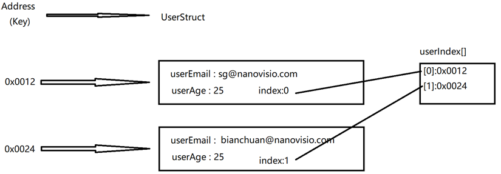
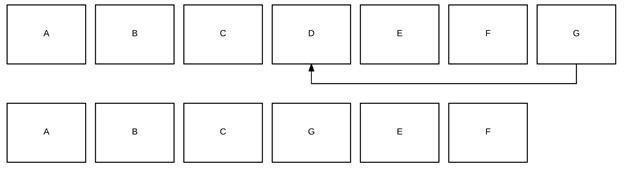
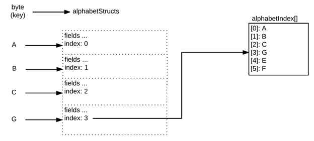

摘要：Ethereum是Block Chain的一种实现，而Block Chain在存储方面跟接近于一种分布式账本。每个加入到Ethereum网络中的节点都会有一份COPY。数据是存储在网络中的所有节点中。在这个方面，与传统的关系数据库有着完全不一样的特点。那么在基于Solidity的编程中，也会有着不一样的思路。这篇文章，主要是分享一下编程思路上与传统关系数据库的CRUD(Create, Read, Update, Delete)处理上的区别。
本篇是一个系列：
第一篇谈一谈Ethereum的数据（变量）存储的位置（Data Location），以及几个常用的数据类型。
第二篇会谈一谈Create，Read和Update的方法。
第三篇会谈一谈如何Delete.
CRUD – Delete
现在流行的应用程序基本都是要进行数据库操作，其中最基本的操作就是CRUD。在Block Chain中的Smart Contract，也是需要做类似的操作。所不同的是，大部分的应用程序的CRUD是在数据库中进行。对应的，Smart Contract的CRUD是在on-chain table-like storage上面进行。
我这里假设一个最常见的流程：
- 在on-chain storage上创建一个比较简单的entity ，类似于table或者collection。Entity的内部定义了一些简单的字段(field), 类似于column 。
- 插入一条记录，这条记录带有Key (Primary Key)。
- 通过Key (Primary Key)，在storage中获取这个记录。
- 获取这个entity总共插入了几条记录。类似于select count(*) from table 。
- 读取所有的数据记录。类似于select * from table 。
- 更新一条记录。Update。
- 检查一个Key是否存在。
- 删除一条记录。
在上一篇文章中，我们完成了1-7的步骤。现在这篇文章，我们要完成删除一条记录的功能。为了能够删除一条记录，我们需要定义一个interface如下：
1 | function deleteUser(address userAddress) public returns(bool success) {} |
在删除一条记录的时候，我们不单单要在mapping中把这条记录删除。同时，由于我们在Array中保存了这条记录的KEY值，所以同时也要在Array中删除这条记录的KEY。那么问题来了，我们要怎么样才能找到KEY在Array中的位置？我们当然可以很奢侈的用for循环找一遍。但是别忘了，在Etherum中任何计算都意味着gas，也就是白花花的银子。为了优化计算（JIE YUE KAI ZHI）,我们需要对UserStruct进行一些调整，增加一个field，用来记录在Array中的index。这样就能反向的获取它在Array中的位置。
1 | struct UserStruct { |

在UserStruct中增加了这个index后，我们就可以在userIndex上删除KEY值了。等等，如果只是单纯在Array – userIndex – 上面删除KEY会引起什么样的问题？
一开始Array上创建了一系列的KEY之后，Array上所有的slot都是被沾满的，看起来井然有序。新创建的KEY会插入在队尾。但是，当我们开始进行DELETE操作的时候，问题就出现了。被删除的位置，就会出现一个HOLE。随着插入和删除的操作的进行，Array的长度会不停增加，而Array中间，由于删除的进行，会留下一片片的HOLE。显得千疮百孔。不但降低了程序的执行效率，增加了gas的开销。还会有可能为BUG留下隐患。例如，删除之后，原先KEY的位置被置为0，而0本身可能就是一个有意义的KEY，从而可能会引发一些不可预期的问题。
为了解决这个问题，我们需要对Array的DELETE做一些优化。
假设我们原来的Array List是这样的:
A B C D E F G
我们需要删除掉D。原先的操作是将D直接删除，那么会留下一个空位。
A B C _ E F G
现在我们要多做一步，不是直接删除D，而是将G从队尾移动到D所在的位置，这样就可以填补空白。
A B C G E F

在全盘考虑到mapping的存在，那么这个删除操作的结果应该是下面这个样子. 原先排列再Array队尾的G，从最后一个位置更新到被删除的KEY的位置。同时，更新userStruct中index保存的index的位置。

DELETE的代码实现
先从mapping中通过KEY找到将要被删除的值，找到它的index. 比如说，要删除掉的是”D”,那么再mapping中找到以”D”最为KEY的value的index。
1
uint rowToDelete = alphabetStructs[key].index; // 3
在Array中找到最后一位的KEY，替换掉”D”所在的位置。
1
2address keyToMove = alphabetindex[alphabetIndex.length-1];
alphabetIndex[rowToDelete] = keyToMove; // G更新G所对应的mapping中的value的index。alphabetStructs[keyToMove].index = rowToDelete; Array的长度-1
1
alphabetIndex.length --;
Array的长度-1
1
alphabetIndex.length --;
那么回到最初的例子，代码实现如下：
1 | // reorganizes the userIndex by initializing the rowToDelete and keyToMove |
Sample Implementation
1 |
|
Sonic Guo